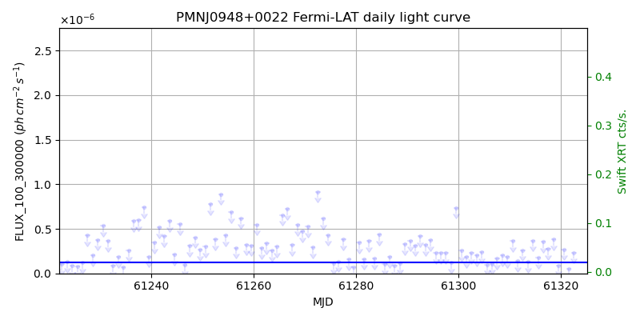
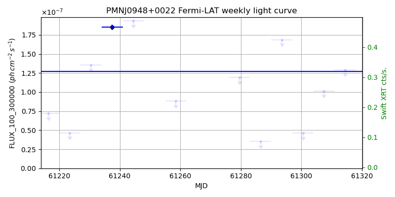
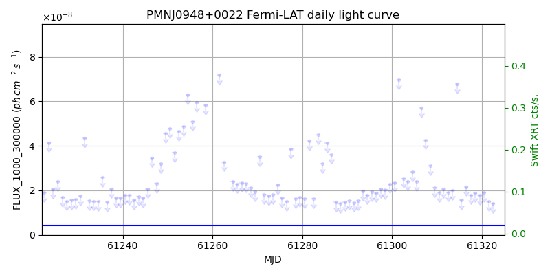
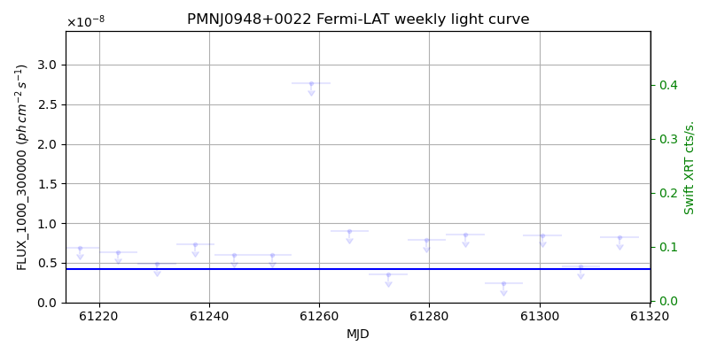

LAT Lightcurve site: https://fermi.gsfc.nasa.gov/ssc/data/access/lat/msl_lc/source/PMN_J0948p0022
Swift site: https://www.swift.psu.edu/monitoring/source.php?source=PMNJ0948+0022
NED: Query
Time of last update of this page: UT: 2026-10-10 15:21 (MJD: 61323.640)
| Property | Value |
|---|---|
| R.A. | 9:48:57.36 |
| Dec. | 0:22:26.4 |
| z | 0.584 |
| 3FGL SpectrumType | LogParabola |
| 3FGL PL Index | |
| 3FGL Flux_100_300000 | 1.27e-07 1 / (s cm2) |
| 3FGL Flux_1000_300000 | 4.19e-09 1 / (s cm2) |
| 3FGL Flux >200 GeV | 3.67e-14 1 / (s cm2) |
| 3FGL Extrap. Crab >200 GeV | 0.00 |
| 3FGL Flux After EBL Absorption >200GeV | 5.90e-15 1 / (s cm2) |
| 3FGL EBL Crab Fraction >200GeV | 0.00 |

| MJD | dMJD | Flux | dFlux | Frac3FGL | FracCrab>200GeV | EBLFracCrab>200GeV |
|---|---|---|---|---|---|---|
| 61318.50 | 0.50 | 3.83e-07 | 0.00e+00 | 0.00 | 0.00 | 0.00 |
| 61319.50 | 0.50 | 8.87e-08 | 0.00e+00 | 0.00 | 0.00 | 0.00 |
| 61320.50 | 0.50 | 2.69e-07 | 0.00e+00 | 0.00 | 0.00 | 0.00 |
| 61321.50 | 0.50 | 5.15e-08 | 0.00e+00 | 0.00 | 0.00 | 0.00 |
| 61322.50 | 0.50 | 2.35e-07 | 0.00e+00 | 0.00 | 0.00 | 0.00 |

| MJD | dMJD | Flux | dFlux | Frac3FGL | FracCrab>200GeV | EBLFracCrab>200GeV |
|---|---|---|---|---|---|---|
| 61286.50 | 3.50 | 3.52e-08 | 0.00e+00 | 0.00 | 0.00 | 0.00 |
| 61293.50 | 3.50 | 1.69e-07 | 0.00e+00 | 0.00 | 0.00 | 0.00 |
| 61300.50 | 3.50 | 4.63e-08 | 0.00e+00 | 0.00 | 0.00 | 0.00 |
| 61307.50 | 3.50 | 1.02e-07 | 0.00e+00 | 0.00 | 0.00 | 0.00 |
| 61314.50 | 3.50 | 1.29e-07 | 0.00e+00 | 0.00 | 0.00 | 0.00 |

| MJD | dMJD | Flux | dFlux | Frac3FGL | FracCrab>200GeV | EBLFracCrab>200GeV |
|---|---|---|---|---|---|---|
| 61318.50 | 0.50 | 1.89e-08 | 0.00e+00 | 0.00 | 0.00 | 0.00 |
| 61319.50 | 0.50 | 1.77e-08 | 0.00e+00 | 0.00 | 0.00 | 0.00 |
| 61320.50 | 0.50 | 1.90e-08 | 0.00e+00 | 0.00 | 0.00 | 0.00 |
| 61321.50 | 0.50 | 1.50e-08 | 0.00e+00 | 0.00 | 0.00 | 0.00 |
| 61322.50 | 0.50 | 1.41e-08 | 0.00e+00 | 0.00 | 0.00 | 0.00 |

| MJD | dMJD | Flux | dFlux | Frac3FGL | FracCrab>200GeV | EBLFracCrab>200GeV |
|---|---|---|---|---|---|---|
| 61286.50 | 3.50 | 8.57e-09 | 0.00e+00 | 0.00 | 0.00 | 0.00 |
| 61293.50 | 3.50 | 2.38e-09 | 0.00e+00 | 0.00 | 0.00 | 0.00 |
| 61300.50 | 3.50 | 8.47e-09 | 0.00e+00 | 0.00 | 0.00 | 0.00 |
| 61307.50 | 3.50 | 4.56e-09 | 0.00e+00 | 0.00 | 0.00 | 0.00 |
| 61314.50 | 3.50 | 8.24e-09 | 0.00e+00 | 0.00 | 0.00 | 0.00 |
--------------------------------------------------------- Using user-supplied coords: 9:48:57.36 0:22:26.4 2000 --------------------------------------------------------- FLWO UT night of: 2026-10-11 Local Sid. @ Midnight: 00:55 Sunset (-15.0) (local, UT): 19:04 02:04 Sunrise (-15.0) (local, UT): 05:18 12:18 Moonrise (local, UT): Moonset (local, UT): Moon phase: 0.01 --------------------------------------------------------- AzTime LSID UT Obj_el Obj_az Mn_el Mn_az Sep. --------------------------------------------------------- 19:04 19:58 02:04 -48.6 315.1 -16.1 264.2 52.5 19:34 20:29 02:34 -52.7 325.0 -22.3 267.8 52.8 20:04 20:59 03:04 -55.9 336.8 -28.5 271.5 53.1 20:34 21:29 03:34 -57.7 350.1 -34.7 275.4 53.4 21:04 21:59 04:04 -58.0 4.2 -40.8 279.7 53.7 21:34 22:29 04:34 -56.8 18.0 -46.8 284.6 54.0 22:04 22:59 05:04 -54.1 30.5 -52.7 290.5 54.3 22:34 23:29 05:34 -50.4 41.1 -58.4 297.7 54.7 23:04 23:59 06:04 -45.8 50.1 -63.6 307.3 55.0 23:34 00:29 06:34 -40.6 57.6 -68.1 320.3 55.4 00:04 00:59 07:04 -35.0 64.0 -71.3 338.2 55.7 00:34 01:29 07:34 -29.2 69.5 -72.6 0.4 56.1 01:04 01:59 08:04 -23.1 74.4 -71.5 22.7 56.4 01:34 02:30 08:34 -16.8 78.9 -68.3 40.8 56.8 02:04 03:00 09:04 -10.5 83.1 -63.9 54.1 57.1 02:34 03:30 09:34 -2.7 87.1 -58.7 63.8 57.5 03:04 04:00 10:04 2.5 91.1 -53.1 71.2 57.8 03:34 04:30 10:34 8.7 95.1 -47.3 77.2 58.2 04:04 05:00 11:04 15.0 99.2 -41.4 82.2 58.5 04:34 05:30 11:34 21.3 103.6 -35.3 86.6 58.8 05:04 06:00 12:04 27.4 108.3 -29.2 90.6 59.1 05:18 06:14 12:18 30.2 110.6 -26.5 92.4 59.3 --------------------------------------------------------- Dark hours >55 deg.: 0.00